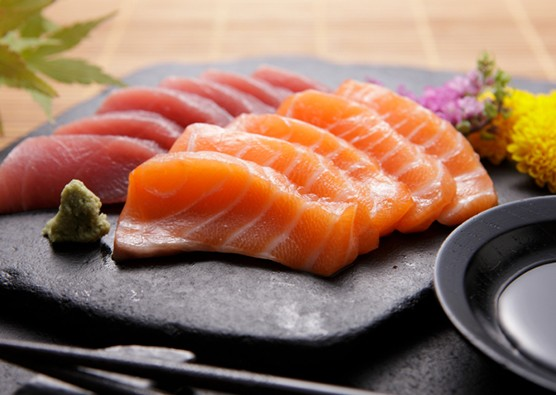

Sashimi

Description
Sashimi is a Japanese dish of thinly-sliced raw food, usually fish and seafood, but also sometimes other meats.
Ingredients
- Daikon radish about 4″ (10 cm)
- Tuna Sashimi grade, block
- Yellowtail Sashimi grade, fillet
- Salmon Sashimi grade, block
- Shiso leaves
- Wasabi
- Soy Sauce
Steps
- Remove skin of Daikon radish. Slice thinly with a mandolin or slicer. Stack 3-4 layers of thin Daikon, and julienne very thinly. Put it in a bowl of water and leave for 15 minutes to make it crispy. Strain and remove moisture.
- Slice tuna and yellowtail into 1/4″-1/3″ thick (6 mm-8 mm) pieces. Slice salmon thinly at a slight angle.
- Serve Sashimi on a plate with radish, Shiso leaves, and Wasabi along with Soy Sauce for dipping.